품질경영기사 (2016-10-01 기출문제)
1과목: 실험계획법
1. 데이터 구조식이 다음과 같고 SA = 238.5, SAR = 249.6, SR = 5.4일 때 1차 단위 오차의 제곱합(Se1)은?
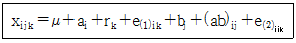
- 3.4
- 4.8
- 5.7
- 6.9
(정답률: 87%)

2. 2수준계 직계배열표
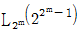
에 관한 설명으로 틀린 것은?- 모든 열은 서로 직교를 이루고 있다.
- 가장 작은 직교배열표는 m이 2일 때이다.
- 직교배열표상에서 총자유도는 행의 수와 같다.
- 각 열은 (0, 1), (1, 2), (+1, -1) 또는 (+,-)등의 기호나 숫자로 표시되어 있다.
(정답률: 75%)
3. 단순회귀에서 결정계수(r2)의 식 중 틀린 것은?
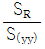
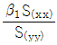
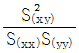
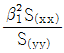
(정답률: 67%)
4. 선형식
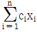
의 제곱합을 표현한 식으로 맞는 것은?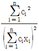
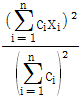
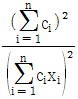
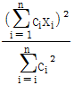
(정답률: 73%)
5. 실험계획법을 연구실 실험에 적용하지 않고 공장실험에 적용할 경우 해당되는 특징은?
- 실험의 랜덤화가 쉽다.
- 인자의 수준 변경이 용이하다.
- 인자의 수준폭이 커도 좋으며 비교적 간단한 실험계획법이 많이 요구된다.
- 부적합품 발생 위험부담과 매 실험당 실험시간이 많이 필요하게 되므로 많은 실험을 할 수 없다.
(정답률: 73%)
6. 반복 없는 5×5 라틴방격에 의하여 실험을 행하고 분산분석한 후 3요인(인자) 수준조합 (A1B1C1)에 대한 구간추정을 할 때의 유효반복수(ne)는 얼마인가?
- 8/25
- 7/9
- 35/20
- 25/13
(정답률: 80%)
7. 다음 표는 1요인 실험(일원배치 실험)에 의해 얻어진 특성치이다. F0값과 F분포의 자유도는 얼마인가?
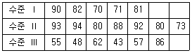
- 10.42, (2, 15)
- 10.42, (3, 14)
- 11.52, (14, 2)
- 11.52, (15,3)
(정답률: 73%)
8. 직교배열표에 대한 설명 중 틀린 것은?
- 3수준계의 가장 작은 직교배열표는 L12(34)이다.
- 2수준 직교배열표를 이용하여 4수준 요인(인자)도 배치 가능하다.
- 실험의 크기를 확대시키지 않고도 실험에 많은 요인(인자)을 짜 넣을 수 있다.
- 2수준 요인(인자)과 3수준의 요인(인자)이 존재하는 실험인 경우에는 가수준(dummy level)을 만들어 사용한다.
(정답률: 69%)
9. 반복이 있는 3요인 실험(삼원배치 실험)에서 3인자가 모수이고 l = 3, m = 2, n = 3, r = 2 일때 A×B의 기대평균제곱(E(VA×B))값은? (단, l은 A수준 수, m은 B수준 수, n은 C수준 수, r은 반복수이다.)
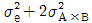
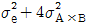
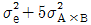
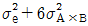
(정답률: 75%)
10. 22요인실험에서 3회 반복하여 2×2×3=12회 실험을 랜덤하게 실시하고자 한다. 이 때 오차항의 자유도(ve)는 얼마인가?
- 3
- 6
- 8
- 9
(정답률: 55%)
11. 혼합모형(A : 모수, B : 변량)일 때 반복 있는 2요인 실험(이원배치 실험)의 구조식에서 조건식이 아닌 것은?
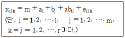
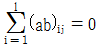
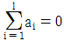
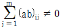
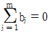
(정답률: 73%)
12. 다음 표는 지분실험을 실시하여 얻은 분산분석표의 일부이다. 이때
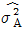
의 값은 약 얼마인가? (단, A, B, C는 변량요인(변량인자)이다.)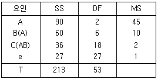
- 1.94
- 2.50
- 4.50
- 45.00
(정답률: 48%)
13. 다음의 1요인 실험(일원배치 실험)에서 요인(인자) A의 제곱합 SA의 값은?
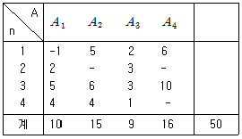
- 39.95
- 46.66
- 55.94
- 92.00
(정답률: 63%)
14. 다음표와 같이 1요인 실험(일원배치 실험) 계수치 데이터를 얻었다. 적합품을 0, 부적합품을 1로 하여 분산분석한 결과 오차의 제곱합(Se)은 60.4를 얻었다. 기계 A2에서의 모부적합품에 대한 95% 신뢰구간을 구하면 약 얼마인가?
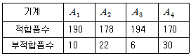
- 0.11±0.0195
- 0.11±0.0382
- 0.11±0.0422
- 0.11±0.⑤65
(정답률: 60%)
15. SN비의 설명 중 맞는 것은?
- 망소특성의 경우 SN비는
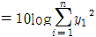
으로 계산된다. - 망목특성의 경우 SN비는
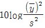
로 계산된다. - SN비는 잡음의 힘을 신호의 힘으로 나눈 개념이다.
- SN비는 잡음이 산출물에 전달되는 힘을 신호입력이 산출물에 전달하는 힘으로 나눈 개념이다.
(정답률: 58%)
16. 실험계획법에서 측정치의 구조를 요인효과와 오차로 분해해서 식으로 나타낸 것은?
- 모수모형
- 구조모형
- 분산모형
- 변량모형
(정답률: 53%)
17. 분산분석표에서 F검정 결과 유의하지 않은 교호작용을 오차항에 넣어서 새로운 오차항으로 만드는 과정을 무엇이라 하는가?
- 풀링(pooling)
- 반복(replication)
- 정의대비(defining contrast)
- 처리조합(treatment combination)
(정답률: 85%)
18. 난괴법의 요인(인자)에 관한 설명 내용으로 틀린 것은?
- 변량요인(변량인자)인 경우에는 모평균추정하는 것은 의미가 없다.
- 변량요인(변량인자)인 경우를 보통 브록요인(블록인자)이라고 부른다.
- 모수요인(모수인자)인 경우에는 각 수준 간의 산포를 구하는 것만이 의미가 있다.
- 모수요인(모수인자)인 경우에는 각 수준 간에서의 모평균 추정에 의미가 있다.
(정답률: 74%)
19. 필요한 요인에 대해서만 정보를 얻기 위해서 실험의 횟수를 가급적 적게 하고자 할 경우 대단히 편리한 실험이지만, 고차의 교호작용은 거의 존재하지 않는다고 가정을 만족시켜야 하는 실험계획법은?
- 교락법
- 난괴법
- 분할법
- 일부실시법
(정답률: 78%)
20. 교락법에 대한 설명 중 틀린 것은?
- 교락법 배치를 위해 직교배열표를 이용할 수 없다.
- 실험오차를 적게 할 수 있으므로 실험의 정확도가 향상된다.
- 교락법을 이용한 실험배치 방법으로 인수분해식과 합동식을 이용한 방법이 많이 사용된다.
- 실험 횟수를 늘리지 않고 실험 전체를 몇개의 블록으로 나누어 배치할 수 있게 만드는 배치법이다.
(정답률: 69%)
2과목: 통계적품질관리
21. 정밀도의 정의를 뜻하는 내용으로 맞는 것은?
- 참값과 측정 데이터의 차
- 데이터 분포의 폭의 크기
- 데이터 분포의 평균치와 참값과의 차
- 데이터의 측정 시스템을 신뢰할 수 있는가 없는가의 문제
(정답률: 53%)
22. 30개씩의 부품이 들어있는 100상자의 로트가 입고되었을 경우 이 중에서 랜덤하게 5상자를 뽑고 그 상자의 전부를 조사하는 샘플링 방법은 무엇인가?
- 집락샘플링
- 층별샘플링
- 계통샘플링
- 단순 램덤 샘플링
(정답률: 71%)
23. 관리도를 구성하는 관리한계선의 의의로 맞는 것은?
- 공정능력을 비교ㆍ평가하기 위해
- 작업자의 숙련도를 비교ㆍ평가하기 위해
- 공정과 설비로 인한 품질변동을 비교하기 위해
- 공정이 관리상태인지 이상상태인지를 판정하기 위해
(정답률: 78%)
24. 12개의 표본으로부터 두 변수 X, Y에 대하여 데이터를 구하였더니, X의 제곱합 Sxx = 10, Y의 제곱합 Syy = 26, X, Y의 곱의 합 Sxy = 16 이었다. 이 때 회구계수(β1)의 95% 신뢰구간은 추정한 것은? (단, t0.975(10) = 2.228, t0.975(11) = 2.201이다.)
- 1.6±0.139
- 1.6±0.141
- 2.6±0.139
- 2.6±0.141
(정답률: 38%)
25. 두 확률변수 X, Y에 대한 기대치(E)와 분산(V)의 성질에 대한 설명 중 틀린 것은? (문제 오류로 실제 시험에서는 1, 4번이 정답처리 되었습니다. 여기서는 1번을 누르면 정답 처리 됩니다.)
- a, b가 상수이면(E(aX-b)=aE(X)이다.
- 확률변수 X, Y가 서로 독립일 때 V(X-Y)=V(X)+V(Y)이다.
- a, b가 상수이면 V(aX-b)=a2V(X) 이다.
- 확률변수 X, Y가 서로 독립일 때 a, b가 상수이면 E(aX-bY)=aE(X)+aE(Y)이다.
(정답률: 67%)
26. 크기가 1500개인 어떤 로트에 대해서 전수검사 시 개당 검사비는 10원 이고, 무검사로 인하여 부적합품이 혼입됨으로써 발생하는 손실은 개당 200원이다. 이 때 임계부적합품률 (Pb)은 얼마이며, 로트의 부적합품률은 3%라고 할 때는 어떤 검사를 하는 편이 이익인가?
- Pb = 1.3%, 무검사
- Pb =1.3%, 전수검사
- Pb =5%, 무검사
- Pb =5%, 전수검사
(정답률: 66%)
27. 10개의 배치(Batch)에서 각각 4개씩의 샘플을 뽑아 범위(R)를 구하였더니
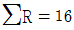
이었다. 이 때 약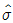
은 약 얼마인가?(단, 군의 크기가 4일 때 d2 = 2.⑤9, d3 = 0.880이다.)- 0.78
- 1.82
- 1.94
- 4.55
(정답률: 37%)
28. 1로트 약 5000개에서 100개의 랜덤 시료 중에 부적합품수가 10개 발견되었다. 이 로트의 모부적합품률의 95% 추정의 정밀도를 구하면 약 얼마인가?
- ±0.035
- 0.⑤9
- ±0.196
- 0.345
(정답률: 54%)
29. KS Q ISO 2859-1 로트별 합격품질한계(AQL) 지표형 샘플링검사 방식에 대한 설명 중 틀린 것은?
- 평균샘플크기(ASSI)는 1회보다 다회의 경우가 작게 나타난다.
- 샘플문자는 검사수준과 로트의 크기를 활용하여 구할 수 있다.
- 검사수준은 상대적인 검사량을 나타내는 것으로 검사수준 Ⅰ 이 검사수준 Ⅲ보다 샘플수가 커④진다.
- 수월한 검사는 KS Q ISO 2859-1의 특징의 하나로 보통검사보다 작은 샘플크기를 사용할 수 있다.
(정답률: 64%)
30. 계수치 축차 샘플링 검사방식(KS Q ISO 8422 : 2009) 규격에서 합격판정선(A)과 불합격판정선(R)이 다음과 같이 주어졌을 때, 어떤 로트에서 1개 씩 채취하여 5번째와 40번째가 부적합품일 경우, 40번째에서 로트에 대한 조처로서 맞는 것은? (단, 누계샘플 사이즈의 중지값 nt = 226 이다.)
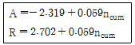
- 검사를 속행한다.
- 로트를 합격으로 한다.
- 로트를 불합격으로 한다.
- 아무 조처도 취할 수 없다.
(정답률: 42%)
31. 검정통계량을 계산할 때 x2통계량을 사용할 수 없는 것은?
- 한국인과 일본인이 야구, 축구, 농구에 대한 선호도가 다른지를 조사할 때
- 20대, 30대, 40대별로 좋아하는 음식(한식, 중식, 양식)에 영향을 미치는지를 조사할 때
- 이론적으로 남녀의 비율이 같다고 하는데, 어느 마을의 남녀 성비가 이론을 따르는지 검정할 때
- 어느 대학의 산업공학과에서 샘플링한 4학년생 10명의 토익성적과 3학년생 15명의 토익성적의 산포에 대한 등분산성을 검정할 때
(정답률: 64%)
32. 임의의 공정에서 추출된 크기 9의 샘플에 들어 있는 특수성분의 함량(g)을 조사하였더니
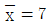
,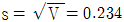
이었다. 모분산을 모를 때, 모평균의 95% 신뢰구간은 약 얼마인가? (단, t0.975(8) = 2.306이다.)- 6.63~7.37
- 6.80~7.20
- 6.82~7.18
- 6.84~7.26
(정답률: 58%)
33.  관리도에서
관리도에서
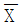
의 변동을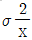
, 개개의 데이터가 나타내는 전체의 산포를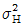
, 군내변동을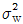
라 하면 이들 간의 관계식으로 맞는 것은? (단, n은 시료의 크기이다.)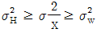
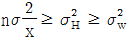
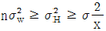
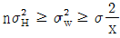
(정답률: 61%)
34.
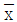
관리도에서 OC곡선에 관한 설명으로 틀린 것은?- 공정이 관리상태일 때 OC 곡선값은 1-이다.
- OC곡선은 관리도의 효율을 나타내는 중요한 척도이다.
- 공정이 이상상태일 때 OC 곡선의 값은 제2종의 오류인 이다.
 관리도에서 OC곡선은
관리도에서 OC곡선은  가 관리한계선 밖으로 나갈 확률이다.
가 관리한계선 밖으로 나갈 확률이다.
(정답률: 37%)
35. 2σ관리한계를 갖는 p관리도에서 공정부적합품률
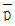
=0.1, 시료의 크기 n = 81이면 관리하한(LCL)은 약 얼마인가?- -0.033
- 0
- 0.033
- 고려하지 않는다.
(정답률: 59%)
36. KS Q ISO 7870-2 : 2014 슈하트 관리도에 소개된 Western electric rules을 활용한 관리도의 이상상태 판정규칙과 관계가 없는 것은?
- 14점이 연속적으로 오르내리고 있음
- 6개의 점이 연속적으로 증가하거나 감소하고 있음
- 9개의 점이 중심선의 한쪽으로 연속적으로 나타남
- 연속된 5개의 점 중 2개 점이 중심선의 한쪽에서 연속적으로 2σ 와 3σ사이에 있음
(정답률: 49%)
37. 통계적 가설 검정에 있어서 검출력의 정의로 맞는 것은?
- 귀무가설이 거짓일 때, 귀무가설을 기각하는 확률
- 귀무가설이 진실일 때, 귀무가설을 기각하는 확률
- 귀무가설이 거짓일 때, 귀무가설을 채택하는 확률
- 귀무가설이 진실일 때, 귀무가설을 채택하는 확률
(정답률: 58%)
38. 계량형 샘플링검사에 대한 설명으로 틀린 것은?
- 부적합품이 전혀 없는 로트가 불합격될 가능성이 있다.
- 계량형 품질특성치이므로 계수형 데이터로 바꾸어 적용할 수는 없다.
- 검사대상제품의 품질 특성에대한 분리 샘플링검사가 필요할 수 있다.
- 품질특성의 통계적 분포가 정규 분포에 근사하지 않을 경우, 적용하기 곤란하다.
(정답률: 68%)
39.
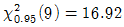
이면 F0.95(9, ∞)의 값은?- 0.94
- 1.88
- 4.11
- 16.92
(정답률: 46%)
40. 합리적인 군으로 나눌 수 없는 경우의 X관리도에서 k=26,
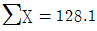
,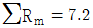
일 때 관리상한(UCL)의 값은 약 얼마인가? (단, d2 = 1.128이다.)- 4.⑤
- 4.16
- 5.16
- 5.69
(정답률: 48%)
3과목: 생산시스템
41. A제품의 판매가격이 개당 300원, 한계이익률(또는 공헌이익률)은 50%, 고정비는 1000만원이다. 500만원의 이익을 올리기 위하여 필요한 A제품의 판매수량은 얼마인가?
- 5만개
- 6만개
- 8만개
- 10만개
(정답률: 52%)
42. 적시생산시스템(JIT)의 특징이 아닌 것은?
- 생산의 평준화를 위해 소로트화를 추구한다.
- 작업자의 다기능공화로 작업의 유연성을 높인다.
- 준비교체 횟수를 줄여 가동률 향상을 추구한다.
- 공급자와는 긴밀한 유대관계로 사내 생산팀의 한 공정처럼 운영한다.
(정답률: 60%)
43. 다중활동분석표의 사용 목적으로 맞는 것은?
- 작업자의 동작을 분석하여 효율화하기 위해 사용한다.
- 설비의 효율적인 배치를 결정하기 위해 사용한다.
- 공정의 흐름을 분석하여 효율화하기 위해 사용한다.
- 조작업의 작업현황을 분석하여 효율화하기 위해 사용한다.
(정답률: 42%)
44. 분산구매의 장점에 해당되는 것은?
- 긴급수요의 경우에 유리하다.
- 구매전문가의 육성이 용이하다.
- 구매단가가 싸고 재고를 줄일 수 있다.
- 시장조사, 구매효과의 측정을 효과적으로 할 수 있다.
(정답률: 64%)
45. 5개의 밀감을 2대의 기계(기계1, 기계2)로 순차적으로 처리하는 데 소요되는 시간이 다음 표와 같다. 존슨규칙(Johnson's rule)에 따라 처리 순서를 정한 결과로 맞는 것은?
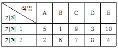
- A→E→C→D→B
- B→C→D→E→A
- B→D→C→E→A
- D→B→E→C→A
(정답률: 62%)
46. 다음의 괄호에 적합한 단어로 연결된 항목은?
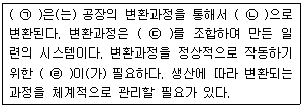
- ㉠ 정보, ㉡ 금액, ㉢ 기계나 장치, ㉣ 생산관리 시스템
- ㉠ 공정, ㉡ 제품, ㉢ 프로세스, ㉣ 생산관리 시스템
- ㉠ 재료, ㉡ 제품, ㉢ 기계나 장치, ㉣ 생산관리 시스템
- ㉠ 생산관리 시스템, ㉡ 제품, ㉢ 기계나 장치, ㉣ 프로세스
(정답률: 77%)
47. 워크샘플링을 이용하여 표준시간을 정하는 기법의 장점이 아닌 것은?
- 사이클 타임이 긴 작업에도 적용이 가능하다.
- 한 사람이 여러 작업자를 대상으로 실시할 수 있다.
- 비반복작업인 준비작업 등에도 적용이 용이하다.
- 작업방법이 변경되면 변경된 부분만 다시 실시하면 된다.
(정답률: 53%)
48. 다음은 작은 컵을 손으로 잡고 병에 씌우는 서블릭 동작분석의 일부이다. ( )안에 들어갈 서블릭 기호가 바르게 나열된 것은?
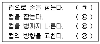
- ㉠ (TL), ㉡
 (P), ㉢
(P), ㉢  (TE), ㉣
(TE), ㉣  (PP)
(PP) - ㉠
 (TL), ㉡ (P), ㉢ (RE), ㉣
(TL), ㉡ (P), ㉢ (RE), ㉣  (TE)
(TE) - ㉠ (TE), ㉡ (G), ㉢
 (TL), ㉣ (PP)
(TL), ㉣ (PP) - ㉠
 (TE), ㉡ (G), ㉢
(TE), ㉡ (G), ㉢  (PP), ㉣
(PP), ㉣  (TL)
(TL)
(정답률: 60%)
49. 총괄생산계획(APP) 전략 중 수요변동에 따라 종업원을 일일이 고용, 해고하는 어려움을 대신하여 고용인원을 고정하고 잔업, 운휴 또는 조업단축, 하도급 계약, 다수교대제도 등을 이용함으로써 수요변동에 대응하는 전략은?
- 미납 주문조정
- 생산율의 조정
- 고용수준 변동
- 재고수준의 조정
(정답률: 52%)
50. 공급사슬(supply chain)에 관한 설명으로 틀린 것은?
- 공급사슬상의 개별 기업의 이익 최대화를 추구하는 것이 목적임
- 고객에게 제품 및 서비스를 인도하는 데 포함되는 모든 활동의 네트워크
- 제품 및 서비스를 고객에게 연결시키는 모든 수송과 물류서비스를 포함하는 가치창조의 통로
- 원자재를 제품 및 서비스로 변환하여 고객에게 제공하는 공급업체들을 연쇄적으로 연결한 집합
(정답률: 61%)
51. 부품 A의 시간연구 결과, 관측시간 평균 5분, 레이팅계수 80%, 정미시간(또는 정상시간)에 대한 비율로 정의한 여유율은 25%이다. 부품 A를 1개월에 9600개 생산하기 위해 필요한 최소 작업인원은 몇 명인가? (단, 1개월 25일, 1일 8시간을 작업한다.)
- 3
- 4
- 5
- 6
(정답률: 45%)
52. 7월의 판매실적치가 20000개, 판매예측치가 22000개였고, 8월의 판매실적치가 25000개일 때, 7월과 8월 2개월의 실적을 고려하여 지수평활법으로 9월의 판매 예측치를 계산하면 얼마인가?(단, 지수평활상수 α는 0.2 이다.)
- 20880개
- 22080개
- 22280개
- 24080개
(정답률: 63%)
53. 원재료의 공급능력, 가용 노동력 그리고 기계설비의 능력 등을 고려하여 이익을 최대화하기 위한 제품별 생산비율을 결정하는 것을 무엇이라 하는가?
- 생산계획
- 제품조합
- 공수계획
- 일정계획
(정답률: 52%)
54. 제품별 배치와 비교할 때 공정별 배치의 장점이 아닌 것은?
- 단위당 생산시간이 짧다.
- 범용설비가 많아 시설투자 측면에서 비용이 저렴하다.
- 한 설비의 고장으로 인해 전체 공정에 미치는 영향이 적다.
- 수요변화와 제품변경 등에 대응하는 제조부문의 유연성이 크다.
(정답률: 48%)
55. 다음은 자주보전 7가지 단계의 내용이다. 순서를 맞게 나열한 것은?
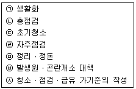
- ㉦→㉢→㉥→㉡→㉣→㉤→㉠
- ㉢→㉥→㉦→㉡→㉣→㉤→㉠
- ㉦→㉢→㉥→㉣→㉤→㉡→㉠
- ㉢→㉥→㉦→㉣→㉤→㉡→㉠
(정답률: 38%)
56. ERP의 특징으로 볼 수 없는 것은?
- 기업수준의 기간업무 (생산ㆍ마케팅ㆍ재무ㆍ인사 등)를 지원한다.
- 모든 응용프로그램이 서로 연결된 리얼타임 통합시스템이다.
- 오픈 클라이언트 서버 시스템(Open client server system)이다.
- 하나의 시스템으로 하나의 생산ㆍ재고거점을 관리하는 것이 원칙이다.
(정답률: 60%)
57. 1일 부하시간은 460분, 작업준비 및 고장 등으로 인한 정지시간은 30분, 1일 총 생산량은 600개, 설비작업의 이론 사이클 타임은 0.3분 /개이며, 실제 사이클 타임은 0.5분/개이다. 적합품률이 95%일 경우, 설비종합효율은 약 몇 %인가?
- 37.2%
- 39.1%
- 39.8%
- 41.9%
(정답률: 36%)
58. PERT와 CPM의 차이점으로 맞는 것은?
- PERT는 Cost 중심이고, CPM은 Time중심이다.
- PERT는 듀퐁 사, CPM은 미 해군에서 개발되었다.
- 소요시간을 PERT는 1점 추정, CPM은 3점 추정한다.
- PERT는 확률적 시간추정치, CPM은 확정적 시간을 사용한다.
(정답률: 46%)
59. 다음은 재고관련비용에 대한 설명이다. 어느 비용에 관한 것인가?
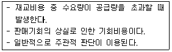
- 주문비용
- 재고부족비용
- 재고유지비용
- 생산준비비용
(정답률: 63%)
60. MRP시스템에서 최종품목 한 단위 생산에 소요되는 구성품목의 종류와 수량을 나타내는 입력 자료는?
- BOM(자재명세서)
- IRF(재고상황파일)
- CRP(능력소요계획)
- MPS(주생산일정계획)
(정답률: 70%)
4과목: 신뢰성관리
61. 다음 [표]는 고장평점법의 고장등급에 따른 고장구분, 판단기준 및 대책을 나타낸 것이다. 내용이 틀린 등급은?
- Ⅰ
- Ⅱ
- Ⅲ
- Ⅳ
(정답률: 56%)
62. 지수분포의 수명을 갖는 전자부품 10개를 수명시험하여 100시간이 되었을 때 시험을 중단하였다. 그 동안 고장난 부품의 수는 6개이었으며, 그 데이터는 다음과 같다. 고장률에 대한 추정치는 약 얼마인가?
- 0.0077/hr
- 0.0128/hr
- 0.0157/hr
- 0.0262/hr
(정답률: 54%)
63. 1000시간당 평균고장률이 0.3으로 일정한 부품 3개를 병렬결합으로 설계한다면, 이 기기의 평균수명은 약 몇 시간인가?
- 1111
- 3333
- 6111
- 9999
(정답률: 59%)
64. 아이템이 어떤 계약이나 프로젝트에 관련된 규정된 신뢰성 및 보전성 요구 조건들을 만족시킴을 보증하는 조직, 구조, 책임, 절차, 활동, 능력 및 자원들의 이행을 지원하는 문서화된 일정 계획된 활동, 자원 및 사건들을 뜻하는 용어는 무엇인가?
- 신뢰성 및 보전성 관리
- 신뢰성 및 보전성 보증
- 신뢰성 및 보전성 통제
- 신뢰성 및 보전성 프로그램
(정답률: 57%)
65. 와이블 분포에 관한 설명으로 틀린 것은?
- 스웨덴의 Waloddi Weibull이 고안한 분포이다.
- 형상모수의 값이 1보다 작은 경우에는 고장률이 감소한다.
- 고장확률밀도함수에 따라 고장률함수의 분포가 달라진다.
- 위치모수가 0이고 사용시간이 t = η이면, 형상모수에 관계없이 불신뢰도는 e-1이 된다.
(정답률: 45%)
66. 번-인(burn-in) 시험의 목적으로 맞는 것은?
- 고장률의 확인
- 초기고장의 감소
- 우발고장의 감소
- 마모고장의 감소
(정답률: 71%)
67. 수명분포가 평균이 100, 표준편차가 5인 정규분포를 따르는 제품을 이미 1⑤시간 사용하였다. 그렇다면 앞으로 5시간 이상 더 작동할 신뢰도는 약 얼마인가? (단, Z가 표준정규분포를 따르는 확률변수라면 P(Z≥1)=0.1587, P(Z≥2)=0.0228이다.)
- 0.0228
- 0.1437
- 0.1587
- 0.1815
(정답률: 38%)
68. 가속계수의 정의로 맞는 것은?
- (사용조건의 수명)/(가속조건의 수명)
- (사용조건의 수명)-(가속조건의 수명)
- (가속조건의 수명)/(사용조건의 수명)
- (가속조건의 수명)-(사용조건의 수명)
(정답률: 54%)
69. 다음 FT도에서 시스템의 고장 확률은 얼마인가?
- 0.006
- 0.496
- 0.504
- 0.994
(정답률: 52%)
70. 수명시험 데이터를 분석하는 방법 중에는 확률지 분석법이 있다. 그런데 이런 수명시험 데이터에 관측 중단된 데이터가 있으면 확률지타점법은 어떻게 해야 하는가?
- 관측중단여부에 관계없이 타점한다.
- 관측중단 데이터는 버리고 고장시간 데이터만 분석하여 타점한다.
- 관측중단 데이터만 타점하고 고장시간 데이터는 타점하지 않는다.
- 관측중단 데이터는 누적분포함수(F(t))계산에만 이용하고 타점은 고장시간만 한다.
(정답률: 50%)
71. 충격이 심한 프레스 작업공정의 이상신호 감지장치에 부착된 1회용 전구 300개에 대하여 동일 조건하에서의 사용 전 수명시험을 실시한 결과 다음과 같은 데이터를 얻었다. 50시간에서의 불신뢰도는 약 얼마인가?
- 0.33
- 0.56
- 0.67
- 0.78
(정답률: 50%)
72. 시스템이 고장상태에서 정상상태로 회복하는 시간(보전시간)을 t라고 할 때, t=0에서 보전도 함수 M(t)의 값은?
- 0.000
- 0.500
- 0.667
- 1.000
(정답률: 58%)
73. λ0 = 0.001/시간, λ1 = 0.0⑤/시간, β = 0.1, α = 0.⑤로 하는 신뢰성 계수축차 샘플링 검사의 합격선은? (단, 수식 계산 시 소수점 이하는 반올림 하시오.)
- Ta = 402r + 563
- Ta = 563r + 402
- Ta = 420r + 563
- Ta = 563r + 420
(정답률: 37%)
74. 리던던시(Redundancy)에 관한 설명으로 맞는 것은?
- 신뢰성시험을 목적으로 모든 부품이 고장 날때까지 테스트하는 시험
- 신뢰성을 개선하기 위하여 계획적으로 내부 스트레스를 경감하는 것
- 구성품의 일부가 고장 나더라도 그 구성부푸분이 고장 나지 않도록 설계되어 있는 것
- 조작상의 과오로 기기의 일부가 고장이 발생하는 경우 이 부분의 고장으로 인하여 다른 부분의 고장이 발생하는 것을 방지하는 설계 방법
(정답률: 45%)
75. 어떤 재료에 가해지는 부하의 평균은 20kg/mm2이고, 표준편차는 3kg/mm2이다. 그리고 사용재료의 강도는 평균이 35kg/mm2이고, 표준편차가 4kg/mm2이다. 이 재료의 신뢰도는 약 얼마인가? (단, 다음의 정규분포표를 이용하여 구한다.)
- 95.45%
- 97.73%
- 99.73%
- 99.87%
(정답률: 65%)
76. 신뢰도가 0.9인 부품과 0.8인 부품이 조합되어 만들어진 기기가 있다. 그런데 이 기기는 2개의 부품 중 어느 하나라도 고장이 나면 기능을 발휘할 수 없다고 한다. 이 기기의 불신뢰도는 약 얼마인가?
- 0.08
- 0.16
- 0.28
- 0.72
(정답률: 55%)
77. 신뢰도가 0.9인 동일한 기기(component)로 구성된 4중 2시스템의 신뢰도는?
- 0.9801
- 0.9900
- 0.9963
- 0.9999
(정답률: 59%)
78. 평균 고장률이 0.002/시간인 지수분포를 따르는 제품을 10시간 사용하였을 경우 고장이 발생할 확률은 약 얼마인가?
- 0.02
- 0.20
- 0.80
- 0.98
(정답률: 49%)
79. 어느 시스템의 수명분포의 확률밀도함수를 f(x)라고 할 때, 이 시스템의 MTBF의 표현식으로 맞는 것은?
(정답률: 44%)
80. 평균수리시간이 2시간인 시스템의 가용도가 0.95이상이 되려면 이 시스템의 MTBF는 얼마이상이어야 하는가? (단, 이 시스템의 수명분포는 지수분포를 따른다.)
- 36
- 37
- 38
- 39
(정답률: 59%)
5과목: 품질경영
81. 어떤 제품의 품질특성 조사결과 표준편차는 0.02, 공정능력지수(CP)는 1.20이었다. 규격하한이 15.50이라면 규격상한은 약 얼마인가?
- 15.57
- 15.64
- 16.10
- 16.55
(정답률: 56%)
82. 창의적 태도나 능률을 증진시키기 위한 방법으로, 자유분방하게 생각하도록 격려함으로써 다양하고 폭넓은 사고를 촉진하여 우수한 아이디어를 얻고자 하는 것은?
- PDPC법
- 매트릭스법
- 계통도법
- 브레인스토밍법
(정답률: 74%)
83. 소정의 품질수준을 유지하고 처음부터 부적합품이 발생하지 않도록 하는 데 소요되는 품질비용은?
- 평가비용
- 외부실패비용
- 예방비용
- 내부실패비용
(정답률: 71%)
84. KS Q ISO 9000 : 2015 품질경영시템 기본사항과 용어에서 '시험'을 뜻하는 용어는?
- 값을 결정/확인결정 하는 프로세스
- 규정된 요구사항에 대한 적합의 확인결정
- 특정하게 의도된 용도 또는 적용을 위한 요구사항에 따른 확인결정
- 심사기준에 충족되는 정도를 결정하기 위하여 객관적인 증거를 수집하고 객관적으로 평가하기 ④위한 체계적이고 독립적이며 문서화된 프로세스
(정답률: 30%)
85. 산업표준화 유형 중 기능에 따른 표준화 분류의 내용으로 틀린 것은?
- 기본규격 : 표준의 제정, 운용, 개폐절차 등에 대한 규격
- 제품규격 : 제품의 형태, 치수, 재질 등 완제품에 사용되는 규격
- 방법규격 : 성분분석 및 시험방법, 제품의 검사방법, 사용방법에 대한 규격
- 전달규격 : 계량단위, 제품의 용어, 기호 및 단위 및 물질과 행위에 관한 규격
(정답률: 49%)
86. 시험장소의 표준상태(KS A 0006 : 2014)에서 규정된 표준상태의 온도에 해당하지 않는 것은?
- 18℃
- 20℃
- 23℃
- 25℃
(정답률: 65%)
87. 6시그마 활동의 추진상에 있어 일반적으로 DMAIC체계를 많이 따르고 있다. 이 중 M 단계의 설명으로 맞는 것은?
- 문제나 프로세스를 개선하는 단계이다.
- 개선할 대상을 확인하고 정의를 하는 단계이다.
- 결함이나 문제가 발생한 장소와 시점, 문제의 형태와 원인을 규명한다.
- 개선할 프로세스의 품질수준을 측정하고 문제에 대한 계량적 규명을 시도한다.
(정답률: 54%)
88. KS인증심사기준(제품분야)에서 일반심사기준의 품질경영관리 심사항목이 아닌 것은?
- 경영책임자는 표준화 및 품질경영을 합리적으로 추진해야 한다.
- 품질경영을 총괄하는 품질경영부서는 독립적으로 운영해야 한다.
- 자재의 품질기준은 생산제품의 품질이 한국산업표준 수준 이상으로 보증될 수 있도록 규정해야 한다.
- 기업의 사내표준 및 관리규정은 한국산업표준을 기반으로 회사 규모에 따라 적합하게 수립하고 회사 전체 차원에서 적용해야 한다.
(정답률: 30%)
89. 측정시스템분석(Measurement System Analysis)에서 측정시스템의 변동유형의 설명으로 맞는 것은?
- 위치 - 정확성, 반복성
- 위치 - 안정성, 재현성
- 퍼짐 - 안정성, 정확성
- 퍼짐 - 재현성, 반복성
(정답률: 57%)
90. 품질경영 조직 중 품질관리부문의 역할로 틀린 것은?
- 품질방침의 결정
- 품질관리계획의 입안
- 품질관리에 대한 교육
- 품질관리에 관련되는 규정이나 표준류의 관리
(정답률: 63%)
91. 다음의 내용 중 ( )에 들어갈 내용을 순서대로 나열한 것은?
- QC, QA
- PL, PLD
- PL, PLP
- PLD, PLP
(정답률: 59%)
92. 품질보증의 사후대책으로 틀린 것은?
- 공정관리
- 제품검사
- 품질심사
- 애프터서비스
(정답률: 63%)
93. 국제표준화기구(ISO)의 설립 목적이 아닌 것은?
- 표준 및 관련 활동의 세계적인 조화를 촉진
- 국가표준이 규정하지 않는 부분의 세부적 보완
- 국제 표준의 개발, 발간 그리고 세계적으로 사용되도록 조치
- 회원기관 및 기술위원회의 작업에 관한 정보교환의 주선
(정답률: 49%)
94. 계통도법의 용도가 아닌 것은?
- 목표, 방침, 실시사항의 전개방식으로 사용
- 시스템의 중대 사고 예측과 그 대응책 책정
- 부문이나 관리기능의 명확화와 효율화 방책의 추구
- 기업 내의 여러 가지 문제해결을 위한 방책을 전개
(정답률: 49%)
95. 품질경영시스템 - 기본사항과 용어(KS Q ISO 9000:2015)에서 요구사항을 명시한 문서는?
- 지침(Guidlines)
- 시방서(Specification)
- 품질계획서(Quality plan)
- 품질매뉴얼(Quality manual)
(정답률: 59%)
96. A.R Tenner는 고객만족을 충분히 달성하기 위하여 그 단계를 다음과 같이 정의하였다. [단계 2]에 해당하지 않는 것은?
- 소비자 상담
- 소비자 여론 수집
- 판매기록 분석
- 설계, 계획된 조사
(정답률: 51%)
97. 국가품질상의 심사범주에 해당되는 것이 아닌 것은?
- 리더십
- 고객과 시장중시
- 전략기획
- 시스템관리 중시
(정답률: 38%)
98. KS Q ISO 9000:2015 품질경영시스템 기본사항과 용어에서 '요구사항과 관련된 대상의 고유 특성'을 의미하는 것은?
- 품질계획
- 품질관리
- 품질특성
- 품질심사
(정답률: 75%)
99. 특성요인도에 대한 설명으로 틀린 것은?
- 품질특성과 관련된 요인을 도출한다.
- 계량치 데이터의 분포를 알기 위해 사용된다.
- 필요시 품질특성마다 여러 장으로 작성할 수 있다.
- 결과에 요인이 어떻게 관련되어 있는지를 규명하기 위해 작성하는 그림이다.
(정답률: 57%)
100. 어떤 조립품은 2개의 부품으로 조립된다. 조립품은 규정 공차가 ±0.015일 때, 1개의 부품은 공차가 ±0.010으로 이미 만들어져 있다. 나머지 부품의 공차는 약 얼마로 설계해야 하는가?
- ±0.0112
- ±0.0250
- ±0.0350
- ±0.⑤50
(정답률: 57%)